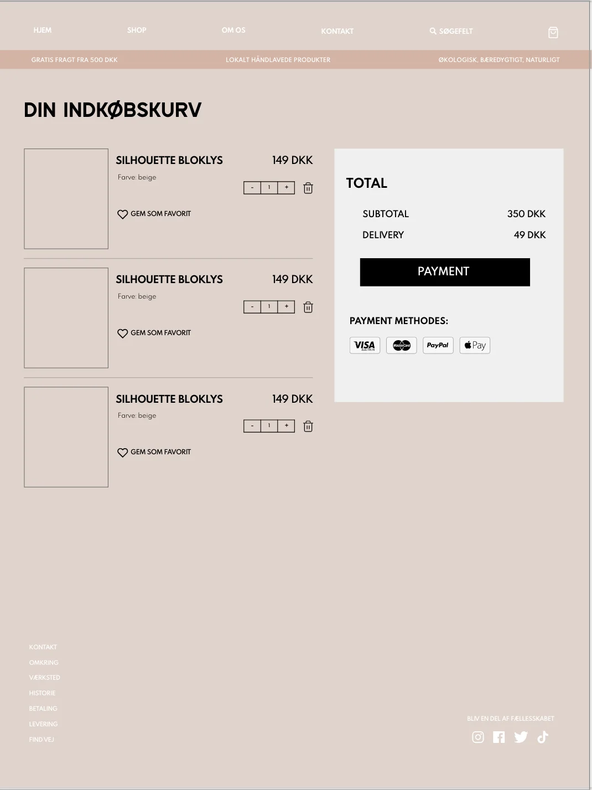
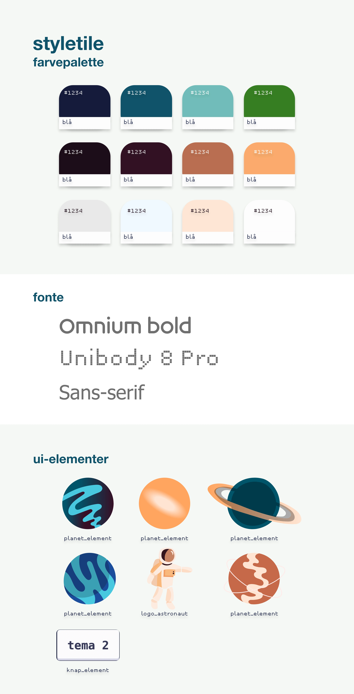
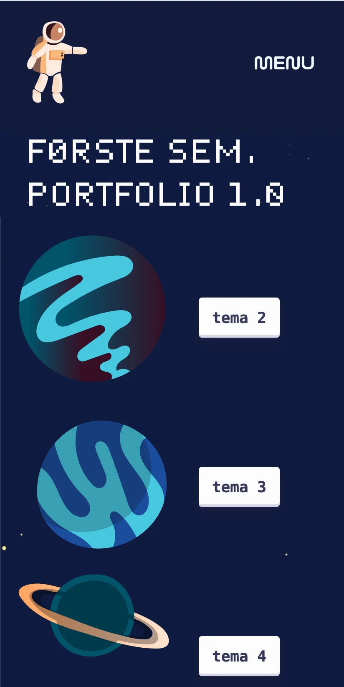
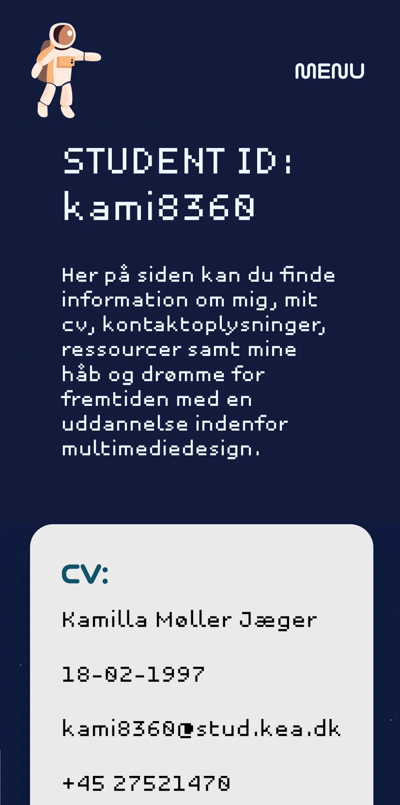

TEMA 2 - Grundlæggende web
Temaet grundlæggende web havde til formål at introducere os til de grundlæggende principper
indenfor design af digitale
brugergrænseflader, digital indholdsproduktion, kommunikation og responsivt webdesign. Via
henholdsvis studiestartsprøven og temaopgaven, lærte jeg at opsætte
websites via html og css - et eksempel på brugen af disse “værktøjer” ses på udarbejdelsen af
forside og produktside til emnesitetet (billede 1 og 2).
[Billed 1 - Emnesite forside]
Billed 2
Her er der her er gjort brug af
kodning, adobe illustrator samt programmet XD til moodboard (billede 3). Dertil blev vi
introduceret
til processen at planlægge opbygningen af et website ved hjælp af wireframes og styletile (billede
4).
Billed 3
Billed 4
Jeg havde især udfordringer med at forstå html- og css-sproget til at starte med, og det krævede
derfor at jeg havde et andet forsøg med studiestartsprøven (billede 5).
Min proces var i den forbindelse at genlæse det pågældende materiale fra undervisningen samt at
se en række YouTube-videoer omkring de grundlæggende principper indenfor kodning.
Jeg havde i
løbet af dette tema også stor glæde af øvelserne vi blev introduceret til på
websitet “free code camp”.
Billed 5
[Link til: website / studiestartsprøven] [Link til: Emnesite]TEMA 3 - Grundlæggende UX
I dette tema blev vi som studerende stillet opgaven at udvikle en digital brugergrænseflade
med udgangspunkt i en bestemt målgruppe. I dette tilfælde en webshop med salg af t-shirts.
Med udgangspunkt i min egen aldersgruppe gjorde jeg, til løsningen til denneopgave, brug af
desk-research til at finde
frem til forbrugerens prioritet i forbindelse med valg af tøj.
Resultatet blev en webshop med fokus på bæredygtighed og kønsneutrale styles, hvilket blev
udgangspunktet for mine designmæssige valg for det visuelle udtryk. Dette har i høj grad givet
sig til udtryk i neutrale farver, som ikke skal repræsenteret et bestemt kønnet udtryk (billede
6, 7 og 8).
Billed 6

Billed 7
Billed 8
TEMA 4 - Grundlæggende animation
Via tema 5 blev vi introduceret til javascript og havde til opgave at bruge disse kompetencer til at
udarbejde et animationsspil (billede 9 og 10).
Billed 9
Billede 10
Opgaven var utrolig interessant og
krævende, og det var
nødvendigt
at trække på ressourcer fra de foregående temaer til løsning af denne opgave.
Jeg fandt den
kreative
proces med udarbejdelsen af figurer i illustrator enormt spændende. I løbet af den proces startede
jeg ud med at finde inspiration på det sociale medie Pinterest. Dette mundede ud i et moodboard
(billed 11), skitsetegninger (billed 12, 13 og 14) og videre generering og designproces i
illustrator. I den
forbindelse gik jeg med et valg om at designe ud fra flatdesign og baby bias.
Billed 11
Billed 12
Billed 13
Billed 14
Opgaven gav
en god introduktion til javascript, og selvom jeg grundet tidspres ikke endte med at færdiggøre
spillet fuldstændig, så fik jeg en god forståelse for de grundlæggende principper - kompetencer jeg
senere gjorde brug af ved udarbejdelsen af indkøbskurven på vores redesign i tema 5.
Nedenfor ses yderligere aktivitetsdiagrammet for spillet samt billeder af designprocessen i
illustrator:
Billed 15
Billed 16
Billed 17
Billed 18
Billed 19
Billed 20
[Link til: temaopgave]TEMA 5 - Grundlæggende indhold
Under tema 5 var vores opgave som gruppe at lave et redesign for en forbedret brugeroplevelse af en
eksisterende virksomheds nuværende website. Min rolle var at opbygge websitets indkøbskurv, ved
hjælp af henholdsvis html, css og javascript. Målet var at skabe en simpel og overskuelig side, der
vakte genkendelse hos forbrugeren (billede 21).

Udover dette havde jeg til opgave at designe en illustration af virksomhedens brandnavn, som havde
til formål at illustrere virksomhedens identitet. Udviklingsprocessen kan ses i
illustrator (billede 23) og adobe xd (billede 22):
Billed 22
Billed 23
En del af udfordringerne i forbindelse med denne opgave
var i samarbejde med andre at blive enige om en visuel stil og retning.
Vores løsning var hver især at komme op med moodboards og et eksempel på en forside - ud fra disse
forsøgte vi at plukkede de bedste idéer ud. Her lærte jeg især at acceptere, at selvom jeg kunne se
potentialet i en illustration, valgte vi som gruppe at gå i en anden retning.
Da vi havde problemer med at virksomheden, trak sig fra projektet dagen inden optagelse, blev vi i
samarbejde med underviser enige om at lave en dummy-video. Da alle kalendere skulle gå op, kunne jeg
desværre ikke deltage i denne del.
Heldigvis havde jeg fået god træning i optagelse, planlægning af video samt lyd- og videoredigering
fra pilotopgaven (billede 24).
Da jeg allerede har god erfaring med videoredigering og -optagelse, faldt opgaven mig ret
ligetil - til gengæld var jeg ikke bekendt med, hvordan man brugte en ekstern mikrofon til optagelse
og i denne forbindelse, hvordan man gjorde brug af premiere pro til at synkronisere lyd- og
videospor. Dette var en virkelig spændende og utrolig brugbar erfaring, som jeg ved jeg kommer til
at bruge ved video/social media-produktion i fremtiden.
Billed 24
[Link til: pilotvideo] [Link til: redesign og temadokumentation]TEMA 6 - Portfolio eksamen
I forbindelse med eksamensopgaven har vi som studerende haft til opgave at … I udarbejdelsen af denne eksamensopgave, har jeg gået katagorisk til værks og gjort brug af de fremgangsmåder, som vi i løbet af semesteret har fået præsenteret. Dette gælder bl.a.:
- skitsetegning (billede 25)
- wireframes (billede 26)
- styletile (billede 27)
- samt overblik via to-do-liste (billede 28)
Til løsningen af opgaven har jeg gjordt brug html, css og javascript der i sammenspil har
muliggjort at skabe en brugergrænseflade med fokus på user interface - ressourcer jeg især tillærte
mig
i løbet af tema 2 og tema 3.
Dertil har jeg valgt et “legende” visuelt udtryk i form af
animerede
figurer skabt i illustrator, der tjener til formål at skabe effekten af en “rejse” gennem websitet
og
produktets forskellige løsninger. I denne forbindelse, har jeg især haft fokus på valg af farver og
fonte.
Billed 25
Billed 26
Billed 27
Billed 28
De kommende fem billeder illustrerer udviklingen i websitet i løbet af
projektet:
Billed 29
Billed 30
Billed 31
Billed 32
Billed 33